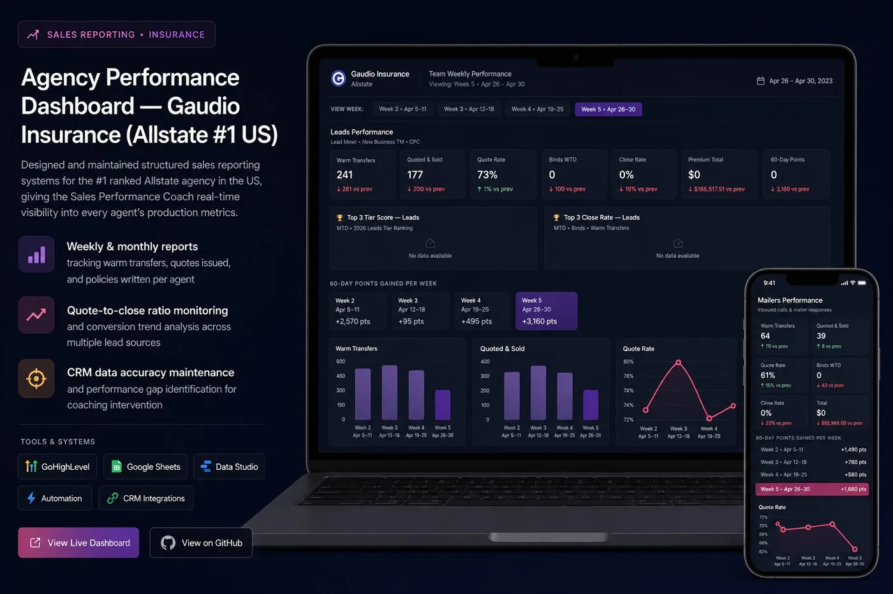

A performance dashboard for the #1 Allstate agency in the US
I was hired as an executive assistant. I noticed the Sales Performance Coach had no single place to see how every agent was doing, so I designed and built one: a custom web app that turns scattered spreadsheets into week-by-week coaching insight.
Animated walkthrough of the dashboard on desktop and mobile.
The numbers existed. The picture didn’t.
The Sales Performance Coach at the #1 ranked Allstate agency in the US coaches a large team of agents. Their numbers (warm transfers, quotes, closes, points) lived across separate sheets.
To answer simple questions like who is on track this week? or who needs coaching?, someone had to pull and compare figures by hand, week after week.
- Agent numbers spread across sheets, with no single view
- No quick way to compare this week with last week
- Hard to spot who was trending up and who needed help
One web app, built around how the coach actually works
Nobody asked for a tool. I saw the reporting gap and built the tool to close it. It runs on the Google tools the agency already used, so there was no new software to buy and nothing new for the team to learn.
Login
A private web app with sign-in, so performance data stays with the people who should see it.
KPI cards
Warm transfers, quoted & sold, quote rate, binds, close rate, and premium, each with the change versus the previous week.
Week-by-week view
Switch between weeks in one click and watch the trend line up, so the direction is obvious at a glance.
Rankings & leaderboard
Tier-score and close-rate rankings plus an agent leaderboard that shows who is leading and who is falling behind.
60-day points
Points gained per week over a rolling 60 days, to track progress toward goals over time.
Desktop and phone
Separate views for leads and mailer performance, laid out to work on a laptop or a phone.
From raw sheets to a coaching view
Google Sheets
Agent activity and production numbers stay where the team already records them.
Apps Script
Calculates KPIs, tier scores, and weekly and monthly roll-ups automatically.
Web dashboard
Login, KPI cards, leaderboard, and Chart.js trend charts.
Weekly coaching
The coach sees who is on track and who needs a conversation.
Every agent, every week, in one place
agents tracked in a single view, instead of across separate sheets.
trends that are obvious at a glance: who is improving, who is slipping, and when it changed.
weekly and monthly reporting that refreshes itself, with no manual compiling.

Built with AI as my pair programmer
I’m not a career developer. I designed the tool, worked out the logic, and built it with Claude as my pair programmer: no developer and no agency.
That’s the approach I bring to clients: understand the operation first, then use AI and the tools you already have to close the gap fast.
Have numbers scattered across spreadsheets?
I can build a dashboard around how your team actually works, on the tools you already pay for.